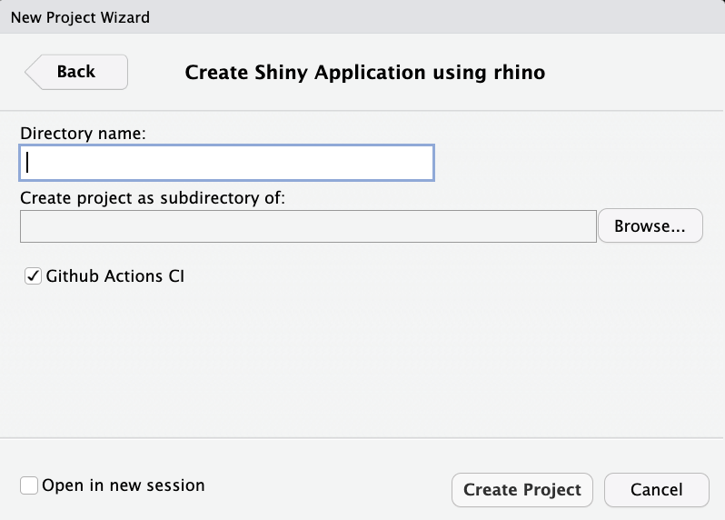
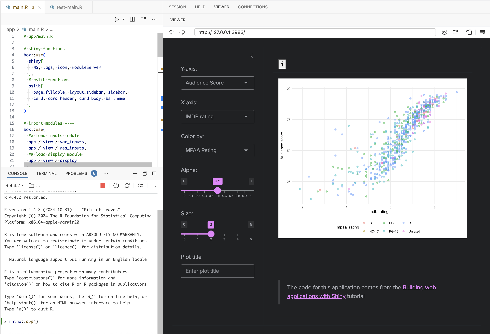
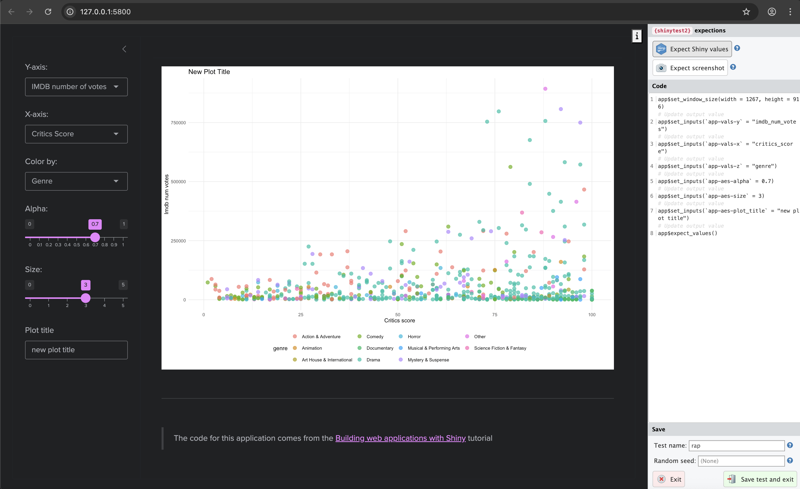

The following package(s) will be updated in the lockfile:
# CRAN ------------------------------------------------------
- renv [* -> 1.0.3]
# GitHub ----------------------------------------------------
- testthat [* -> r-lib/testthat@HEAD]
# RSPM ------------------------------------------------------
< < < < < < < OMITTED > > > > > > > >
The version of R recorded in the lockfile will be updated:
- R [* -> 4.3.1]
- Lockfile written to "~/projects/pkgs/rap/renv.lock".
- Project '~/projects/pkgs/rap' loaded. [renv 1.0.3]
✔ Initialized renv.
✔ Application structure created.
✔ Unit tests structure created.
✔ E2E tests structure created.
✔ Github Actions CI added.the rhino framework
rhino apps are unique because unlike golem and leprechaun, they aren’t R packages. rhino uses box modules to manage add-on package functions, which minimizes dependencies and separates the application’s code into a clear ‘division of labor.’1
Getting started
To create a new rhino application, select Project > New Project > New Directory, and Shiny Application using rhino. The New Project Wizard will require a Directory name and subdirectory and Github Actions CI (selected by default)

rhino appAfter clicking Create Project, you’ll see the following output in the **Console*:**
This initializes the new rhino app by opening the .Rproj file in RStudio. To create a rhino application from the console, use the following:
install.packages("rhino")
rhino::init("/path/to/rhino/app")rhino structure
The initial folder structure for a new rhino app is below:
rap/
├── app
│ ├── js
│ ├── logic
│ ├── main.R
│ ├── static
│ ├── styles
│ └── view
├── app.R
├── brap.Rproj
├── config.yml
├── dependencies.R
├── renv
│ ├── activate.R
│ ├── library
│ └── settings.json
├── renv.lock
├── rhino.yml
└── tests
├── cypress
├── cypress.json
└── testthat
12 directories, 10 filesThe rhino package website has excellent documentation on their app structure philosophy, and it’s worth reading through this before getting started. I’ll do my best to summarize the application’s files below:
App code
The app/ folder contains the primary folder and files:
app/
├── js/
├── logic/
├── main.R
├── static/
├── styles/
└── view/
6 directories, 1 fileThe subfolders in app/ contain the following files:
app/js/: initially contains a blankindex.jsscriptapp/logic/: contains utility functions and code independent from Shinyapp/static/: stores external resources (like JavaScript files) and is similar to the sub-folders ininst/fromgolemandleprechaunapp/styles/: holds custom styles (CSS and HTML) in theapp/styles/main.cssfile (which is initially blank)app/view/: will hold all the code used to build the application and relies upon the reactive capabilities of Shiny.app/main.R: contains the primaryuiandservercode (similar toapp_uiandapp_serverin agolemapplication)- The initial
main.Rfile contains the following code:
show/hide initial app/main.R
box::use( shiny[bootstrapPage, moduleServer, NS, renderText, tags, textOutput], ) #' @export ui <- function(id) { ns <- NS(id) bootstrapPage( tags$h3( textOutput(ns("message")) ) ) } #' @export server <- function(id) { moduleServer(id, function(input, output, session) { output$message <- renderText("Hello!") }) }- The initial
box::use()?
If the box syntax looks strange–don’t worry! box is designed to ‘completely replaces the base R library and require functions.’ We’ll cover it more in the Build section below.
app.R
app.Rwill run the application and contains therhino::app()function:2
# Rhino / shinyApp entrypoint. Do not edit.
rhino::app()YAML files
New rhino apps begin with two .yml configuration files:
config.ymlis a YAML file that follows theconfigpackage format.- This file initially contains two calls to
rhinos environment variables:3
default: rhino_log_level: !expr Sys.getenv("RHINO_LOG_LEVEL", "INFO") rhino_log_file: !expr Sys.getenv("RHINO_LOG_FILE", NA)- This file initially contains two calls to
rhino.ymlis a configuration file that contains options for 1) Sass build settings, and 3) import a legacy application structure torhino.4- the code below showcases the optional arguments (and is not included in the application)
sass: string # required | one of: "node", "r" legacy_entrypoint: string # optional | one of: "app_dir", "source", "box_top_level"
Dependencies
rhino apps manage dependencies with the dependencies.R file and renv package.
dependencies.Rcontains any add-on packages used in the application. As we can see from the note in the comments, dependencies are tracked usingpackratinrsconnect.5# This file allows packrat (used by rsconnect during deployment) # to pick up dependencies. library(rhino)
The
renv/folder stores the R package versions used in the application.renv.lockcontains the packages and R version used in our application.6rap/ ├── renv/ │ ├── activate.R │ ├── library/ │ ├── sandbox/ │ └── settings.dcf └── renv.lock- We know we’ll be using
ggplot2,stringr, andrlangin the app, so we’ll load these packages here:
rhino::pkg_install(c("ggplot2", "stringr", "rlang"))- Adding packages with
rhino::pkg_install()will automatically updatedependencies.Randrenv
- We know we’ll be using
Tests
The tests/ folder initially contains two sub-folders, cypress/ and testthat/, and the cypress.json file.
tests/
├── cypress/
├── cypress.json
└── testthat/tests/cypress/holds folders for using the Cypress web and component testing framework.7tests/ ├── cypress/ │ └── integration/ │ └── app.spec.js └── cypress.json
Building a rhino app
Now that we’ve covered the initial file and folder structure of a new rhino application, we’re going to cover how to convert the ‘vanilla’ Shiny app below into the rhino structure. We’ll have to 1) load the movies data, and 2) create/call the scatter_plot() utility function, and 3) convert the contents of app.R into modules.
show/hide monolithlic app.R file
ui <- shiny::fluidPage(
theme = shinythemes::shinytheme("spacelab"),
shiny::sidebarLayout(
shiny::sidebarPanel(
shiny::selectInput(
inputId = "y",
label = "Y-axis:",
choices = c(
"IMDB rating" = "imdb_rating",
"IMDB number of votes" = "imdb_num_votes",
"Critics Score" = "critics_score",
"Audience Score" = "audience_score",
"Runtime" = "runtime"
),
selected = "audience_score"
),
shiny::selectInput(
inputId = "x",
label = "X-axis:",
choices = c(
"IMDB rating" = "imdb_rating",
"IMDB number of votes" = "imdb_num_votes",
"Critics Score" = "critics_score",
"Audience Score" = "audience_score",
"Runtime" = "runtime"
),
selected = "critics_score"
),
shiny::selectInput(
inputId = "z",
label = "Color by:",
choices = c(
"Title Type" = "title_type",
"Genre" = "genre",
"MPAA Rating" = "mpaa_rating",
"Critics Rating" = "critics_rating",
"Audience Rating" = "audience_rating"
),
selected = "mpaa_rating"
),
shiny::sliderInput(
inputId = "alpha",
label = "Alpha:",
min = 0, max = 1,
value = 0.4
),
shiny::sliderInput(
inputId = "size",
label = "Size:",
min = 0, max = 5,
value = 3
),
shiny::textInput(
inputId = "plot_title",
label = "Plot title",
placeholder = "Enter text to be used as plot title"
),
shiny::actionButton(
inputId = "update_plot_title",
label = "Update plot title"
)
),
shiny::mainPanel(
shiny::br(),
shiny::p(
"These data were obtained from",
shiny::a("IMBD", href = "http://www.imbd.com/"), "and",
shiny::a("Rotten Tomatoes", href = "https://www.rottentomatoes.com/"), "."
),
shiny::p("The data represent",
nrow(movies),
"randomly sampled movies released between 1972 to 2014 in the United States."),
shiny::plotOutput(outputId = "scatterplot"),
shiny::hr(),
shiny::p(shiny::em("The code for this shiny application comes from",
shiny::a("Building Web Applications with shiny",
href = "https://rstudio-education.github.io/shiny-course/"))
)
)
)
)
server <- function(input, output, session) {
new_plot_title <- shiny::reactive({
tools::toTitleCase(input$plot_title)
}) |>
shiny::bindEvent(input$update_plot_title,
ignoreNULL = FALSE,
ignoreInit = FALSE)
output$scatterplot <- shiny::renderPlot({
scatter_plot(
df = movies,
x_var = input$x,
y_var = input$y,
col_var = input$z,
alpha_var = input$alpha,
size_var = input$size
) +
ggplot2::labs(title = new_plot_title()) +
ggplot2::theme_minimal() +
ggplot2::theme(legend.position = "bottom")
})
}
shiny::shinyApp(ui = ui, server = server)show/hide scatter_plot.R utility function
scatter_plot <- function(df, x_var, y_var, col_var, alpha_var, size_var) {
ggplot2::ggplot(data = df,
ggplot2::aes(x = .data[[x_var]],
y = .data[[y_var]],
color = .data[[col_var]])) +
ggplot2::geom_point(alpha = alpha_var, size = size_var)
}Download the movies dataset.
box modules

Unlike R packages, rhino applications don’t use the NAMESPACE and DESCRIPTION to manage dependencies. Instead, they use the box modules to explicitly import packages and functions. box is designed for writing “reusable, composable and modular R code”
Dependency refresher
In standard Shiny app development, add-on package functions are used with the following steps:
install the package using
install.packages('pkg')run
library(pkg), which loads the package namespace ‘and attach[es] it on the search list’
If/when the app is converted into an R package, add-on packages are managed by:
including the package in the
DESCRIPTIONfileusing
pkg::fun()in code belowR/9
The methods above might prompt the following questions:
Why do we load and attach the entire package namespace and if we only need a single function during standard (i.e., non-package) R development? 10
Why do we install the entire package in the
DESCRIPTIONif we’re only accessing a single function below R withpkg::fun()in our R package? 11
This is where box comes in–it’s designed to ‘completely replace the base R library and require functions’.
How box modules work
Below is a quick demonstration of box modules using tidyverse::tidyverse_logo(). If we attempted to use the tidyverse_logo() function without installing or loading the tidyverse meta-package, we see the following error:12
tidyverse_logo()Error in tidyverse_logo(): could not find function "tidyverse_logo"This is expected, because even if tidyverse has been installed, it hasn’t been loaded with libaray(tidyverse). box modules allow us to encapsulate and explicitly import packages and functions.13
Below is a quick demonstration of how they work:
1) Create folder
Create a new box module named tidy (which again, is just a folder named tidy)
2) Import
Import the tidyverse_logo() from tidyverse by creating a logo.R file with the following code
3) Use module
Call box::use(tidy/logo) to access the logo object from the tidy module
└──tidy/
└─logo.R #' @export
box::use(
tidyverse[tidyverse_logo]
)box::use(
tidy/logo
)box::use() creates and accesses box modules. The first call to box::use() in tidy/logo.R places tidyverse_logo() in a tidy module, and the second call to box::use() allows us to use the logo object.
Use
ls()onlogoto return the object(s) it imports:ls(logo)[1] "tidyverse_logo"
To access the objects within a box module, use the $ operator.
logo$tidyverse_logo()⬢ __ _ __ . ⬡ ⬢ .
/ /_(_)__/ /_ ___ _____ _______ ___
/ __/ / _ / // / |/ / -_) __(_-</ -_)
\__/_/\_,_/\_, /|___/\__/_/ /___/\__/
⬢ . /___/ ⬡ . ⬢ box modules are self-contained, meaning the tidyverse_logo() function only exists inside the logo module. Explicitly listing the packages and functions we intend to use with box::use() means we no longer need to include calls to install.packages() and library() or require().
Note what happens when I try to access the
tidyverse_logo()function by itself:tidyverse_logo()Error in tidyverse_logo(): could not find function "tidyverse_logo"
This was a very brief overview of box, so I highly recommend consulting the box website and vignettes. The rhino website also has a great overview on using box with Shiny apps.14
Data
Non-Shiny code and functions should be stored in app/logic/. We’ll include a box module for importing the movies data in app/logic/data.R.15
# contents of app/logic/data.R
#' @export
box::use(
vroom[vroom, cols, col_skip]
)
#' import movies data
#' @export
movies_data <- function() {
raw_csv_url <- "https://bit.ly/47FPO6t"
# from 07_data branch!
vroom(raw_csv_url,
col_types = cols(...1 = col_skip()))
}- 1
-
Add
vroomfunctions - 2
-
Call
vroomfunctions
In app/logic/data.R, the necessary vroom functions are included with box::use() to import movies.csv from GitHub.
Utility functions
The scatter_plot() utility function is stored in app/logic/plot.R. Again, box::use() includes the ggplot2 and rlang functions for scatter_plot():
# contents of app/logic/plot.R
#' scatter plot function
#' @export
scatter_plot <- function(df, x_var, y_var, col_var, alpha_var, size_var) {
box::use(
ggplot2[ggplot, aes, geom_point],
rlang[.data]
)
ggplot(
data = df,
aes(
x = .data[[x_var]],
y = .data[[y_var]],
color = .data[[col_var]]
)
) +
geom_point(alpha = alpha_var, size = size_var)
}- 1
-
Add
ggplot2functions - 2
-
Add
rlangfunctions - 3
-
Use
ggplot2functions - 4
-
Use
rlangfunctions
The app/logic/__init__.R file exports the two modules above:16
# Logic: application code independent from Shiny.
# https://go.appsilon.com/rhino-project-structure
#' @export
box::use(
app / logic / data,
app / logic / plot
)Unit tests
The unit tests for the box modules in app/logic/ and app/view/ are in the tests/testthat/ folder:
tests/testthat/
├── test-data.R
├── test-display.R
├── test-inputs.R
└── test-plot.R
1 directory, 4 filesUnit tests with rhino applications are similar to unit tests in R packages, with a few important differences:
- We don’t have access to the
usethisanddevtoolsfunctions for creating and running test files
- We’ll need to import the necessary
testthatfunctions withbox::use()
- The
rhino::test_r()will run the unit tests intests/testthat/
The first test for app/logic/data.R is below:
# import testthat
box::use(
testthat[describe, it, expect_equal, expect_true]
)
# import data module
box::use(
app / logic / data
)
describe(description = "Feature: Movies Data Dimensions Verification
As a data analyst,
I want to ensure the movies data frame has the correct dimensions
So that I can rely on its structure for further analysis.",
code = {
it(description = "Scenario: Checking the dimensions of the movies data frame
Given a function to import movies data
When I call the function to retrieve the movies data
Then the data frame should have 651 rows and 34 columns
And the data frame should be of type 'data.frame'",
code = {
# call function to import movies data
movies <- data$movies_data()
# test dimensions
expect_equal(
object = dim(movies),
expected = c(651L, 34L))
# test class
expect_true(object = is.data.frame(movies))
})
})The test for app/logic/plot.R is below. Note this test imports the app/logic/data and app/logic/plot modules:
# import testthat and ggplot2 function
box::use(
testthat[describe, it, expect_equal, expect_true],
ggplot2[is.ggplot]
)
# import data and plot modules
box::use(
app / logic / data,
app / logic / plot
)
describe("Feature: Scatter Plot Generation Verification
As a data analyst,
I want to ensure that scatter_plot() generates a valid scatter plot
So that I can use it for visualizing relationships in movies data.",
code = {
it("Scenario: Generating a scatter plot with specified parameters
Given a function to import movies data
And a function scatter_plot() from the plot module
When I call scatter_plot() with movies data
And specify x_var as 'critics_score'
And specify y_var as 'imdb_rating'
And specify col_var as 'mpaa_rating'
And set alpha_var to 2 / 3
And set size_var to 2
Then the function should return a ggplot object with a scatter plot",
code = {
# call function to import movies data
movies <- data$movies_data()
# test point plot
expect_true(
is.ggplot(
# call scatter_plot() from plot module
plot$scatter_plot(
df = movies,
x_var = 'critics_score',
y_var = 'imdb_rating',
col_var = 'mpaa_rating',
alpha_var = 2 / 3,
size_var = 2
)
)
)
})
})App Modules
Now we’re going to convert contents of app.R into Shiny modules. Shiny modules should be placed in the app/view/ folder. rhino modules are still broken into ui and server functions, and box::use() is called within each function to add the necessary package[function]
The first module we’ll create is the
app/view/inputs.Rmodule for collecting the user inputs:# app/view/inputs.R # define module functions #' input values ui #' @export ui <- function(id) { box::use( shiny[ NS, tagList, selectInput, h3, sliderInput, textInput ], ) ns <- NS(id) tagList( selectInput( inputId = ns("y"), label = "Y-axis:", choices = c( "IMDB rating" = "imdb_rating", "IMDB number of votes" = "imdb_num_votes", "Critics Score" = "critics_score", "Audience Score" = "audience_score", "Runtime" = "runtime" ), selected = "audience_score" ), selectInput( inputId = ns("x"), label = "X-axis:", choices = c( "IMDB rating" = "imdb_rating", "IMDB number of votes" = "imdb_num_votes", "Critics Score" = "critics_score", "Audience Score" = "audience_score", "Runtime" = "runtime" ), selected = "imdb_rating" ), selectInput( inputId = ns("z"), label = "Color by:", choices = c( "Title Type" = "title_type", "Genre" = "genre", "MPAA Rating" = "mpaa_rating", "Critics Rating" = "critics_rating", "Audience Rating" = "audience_rating" ), selected = "mpaa_rating" ), sliderInput( inputId = ns("alpha"), label = "Alpha:", min = 0, max = 1, step = 0.1, value = 0.5 ), sliderInput( inputId = ns("size"), label = "Size:", min = 0, max = 5, value = 2 ), textInput( inputId = ns("plot_title"), label = "Plot title", placeholder = "Enter plot title" ) ) } #' input values server #' @export server <- function(id) { box::use( shiny[moduleServer, reactive], ) moduleServer(id, function(input, output, session) { return( reactive({ list( "x" = input$x, "y" = input$y, "z" = input$z, "alpha" = input$alpha, "size" = input$size, "plot_title" = input$plot_title ) }) ) }) }- The
serverfunction inapp/view/inputsreturns the same reactive list of inputs from the UI.
- The
The app/view/display module contains the code for collecting and rendering the graph.
The
app/logic/dataandapp/logic/plotmodules are added toapp/view/displaywithbox::use():# app/view/display.R # import data and plot modules box::use( app / logic / data, app / logic / plot )The
uiinapp/view/displayincludes the necessaryshinyfunctions withbox::use():#' display ui #' @export ui <- function(id) { box::use( shiny[NS, tagList, tags, plotOutput] ) ns <- NS(id) # use data$movies_data() ---- tagList( tags$br(), tags$p( "These data were obtained from", tags$a("IMBD", href = "http://www.imbd.com/"), "and", tags$a("Rotten Tomatoes", href = "https://www.rottentomatoes.com/"), ". The data represent 651 randomly sampled movies released between 1972 to 2014 in the United States." ), tags$hr(), plotOutput(outputId = ns("scatterplot")), tags$hr(), tags$blockquote( tags$em( tags$h6( "The code for this application comes from the ", tags$a("Building web applications with Shiny", href = "https://rstudio-education.github.io/shiny-course/" ), "tutorial" ) ) ) ) }The
serverfunction adds theggplot2,shiny,tools, andstringrfunctions withbox::use()for creating the plot output, and imports themoviesdata withdata$movies_data():#' display server #' @export server <- function(id, var_inputs) { # load box::use( ggplot2[labs, theme_minimal, theme], shiny[NS, moduleServer, plotOutput, reactive, renderPlot], tools[toTitleCase], stringr[str_replace_all] ) moduleServer(id, function(input, output, session) { # use data$movies_data() ---- movies <- data$movies_data() inputs <- reactive({ plot_title <- toTitleCase(var_inputs()$plot_title) list( x = var_inputs()$x, y = var_inputs()$y, z = var_inputs()$z, alpha = var_inputs()$alpha, size = var_inputs()$size, plot_title = plot_title ) }) output$scatterplot <- renderPlot({ # use plot$scatter_plot() ---- plot <- plot$scatter_plot( df = movies, x_var = inputs()$x, y_var = inputs()$y, col_var = inputs()$z, alpha_var = inputs()$alpha, size_var = inputs()$size ) plot + labs( title = inputs()$plot_title, x = str_replace_all( toTitleCase(inputs()$x ), "_", " " ), y = str_replace_all( toTitleCase(inputs()$y), "_", " " ) ) + theme_minimal() + theme(legend.position = "bottom") }) }) }
After composing the module in app/view/display.R, I’ll add testthat tests for the app/logic/ and app/view modules.
Module tests
We can test the application modules with Shiny’s testServer() function. First we’ll test that the reactive list of inputs is returned from app/view/inputs:
# import testthat and shiny::testServer()
box::use(
testthat[describe, it, expect_equal],
shiny[testServer]
)
# import inputs module
box::use(
app / view / inputs
)
describe("Feature: Server Reactive Values Verification
As a Shiny app developer,
I want to ensure that the server function returns a list of reactive values
So that I can confirm the server's responsiveness to input changes.",
code = {
it("Scenario: Checking the return values of the server function
Given a server function inputs$server for handling reactive inputs
When I create a server object and set reactive input values as:
| input | value |
| x | audience_score |
| y | imdb_rating |
| z | mpaa_rating |
| alpha | 0.75 |
| size | 3 |
| plot_title | Example title |
And I compare the returned values from the server
Then the returned values should match the following list:
| key | value |
| x | audience_score |
| y | imdb_rating |
| z | mpaa_rating |
| alpha | 0.75 |
| size | 3 |
| plot_title | Example title |",
code = {
# create server object
testServer(app = inputs$server, expr = {
# create list of output vals
test_vals <- list(
x = "audience_score",
y = "imdb_rating",
z = "mpaa_rating",
alpha = 0.75,
size = 3,
plot_title = "Example title")
# change inputs
session$setInputs(x = "audience_score",
y = "imdb_rating",
z = "mpaa_rating",
alpha = 0.75,
size = 3,
plot_title = "Example title")
# test class
expect_equal(
object = session$returned(),
expected = test_vals
)
})
})
})We’ll also want to make sure the reactive inputs are passed from the app/view/inputs/ module to the app/view/display/ module.
describe("Feature: Server Acceptance of Reactive Values
As a Shiny app developer,
I want to verify that the display server can accept a list of reactive values
So that I can ensure the interactive elements of the app respond as expected.",
code = {
it("Scenario: Confirming the server's handling of reactive input values
Given a server function display$server for processing reactive inputs
When I test the server with a list of reactive inputs:
| input | value |
| x | critics_score |
| y | imdb_rating |
| z | mpaa_rating |
| alpha | 0.5 |
| size | 2 |
| plot_title | Enter Plot Title |
Then the server should correctly receive and process the reactive inputs
And the inputs received by the server should match the specified values",
code = {
# test inputs to display$server
testServer(
app = display$server,
args = list(
# include list of reactive inputs
var_inputs =
reactive(
list(
x = "critics_score",
y = "imdb_rating",
z = "mpaa_rating",
alpha = 0.5,
size = 2,
plot_title = "Enter Plot Title"
)
)
),
expr = {
expect_equal(
# test against input reactive list
object = inputs(),
expected = list(
x = "critics_score",
y = "imdb_rating",
z = "mpaa_rating",
alpha = 0.5,
size = 2,
plot_title = "Enter Plot Title"
)
)
})
})
})These tests confirm the reactive values are passed between the app/view/inputs and the app/view/display modules.
Running tests
Running the testthat tests in rap app is slightly different than executing tests in an R package. The standard devtools functions and keyboard shortcuts aren’t available, but rhino comes with a rhino::test_r() helper function to run all the tests in the testthat/ folder:
tests/testthat/
├── test-data.R
├── test-display.R
├── test-inputs.R
├── test-main.R
└── test-plot.R
1 directory, 5 filesrhino::test_r()✔ | F W S OK | Context
✔ | 4 | data [1.3s]
✔ | 5 | display [1.2s]
✔ | 2 | inputs
✔ | 1 | plot
══ Results ═════════════════════════════════════════════════════════════════════
Duration: 3.3 s
[ FAIL 0 | WARN 0 | SKIP 0 | PASS 12 ]app/main.R
After the app/logic/ and app/view/ code has been written and tested, the modules and layout functions can be included in app/main.R.
box::use()is used to import theshinyandshinythemesfunctions:# app/main.R # shiny functions box::use( shiny[ NS, fluidPage, sidebarLayout, sidebarPanel, mainPanel, fluidRow, column, tags, icon, plotOutput, moduleServer, renderPlot ], shinythemes[shinytheme] ) # import modules box::use( # load inputs module ---- app / view / inputs, # load display module ---- app / view / display )
The ui() and server() functions in app/main look very similar to the movies_ui() and movies_server() functions, except we access the modules using the $ operator.
The
ui()function includes bothinput$ui()anddisplay$ui().#' rap ui #' @export ui <- function(id) { ns <- NS(id) fluidPage( theme = shinytheme("spacelab"), sidebarLayout( sidebarPanel( # use inputs module UI ---- inputs$ui(ns("vals")) ), mainPanel( fluidRow( column( width = 12, tags$h3("rap") ) ), fluidRow( column( width = 1, offset = 11, # example info button --- tags$button( id = "help-button", icon("info"), # add 'onclick' after rhino::build_sass() # and rhino::build_js() onclick = "App.showHelp()" ) ) ), fluidRow( column( width = 12, # use display module UI ---- display$ui(ns("disp")) ) ) ) ) ) }The
serverfunction inapp/main.Rcalls theinputs$server(), collects the input values asselected_vars, and passed these todisplay$server():#' rap server #' @export server <- function(id) { moduleServer(id, function(input, output, session) { # use inputs module server ---- selected_vars <- inputs$server(id = "vals") # use display module server ---- display$server( id = "disp", var_inputs = selected_vars ) }) }
After saving all the module files and app/main.R, we can run the app using app.R:

rap launchAdding non-R code
It’s fairly straightforward to add external resources (i.e., JavaScript, CSS, Sass, etc.) to rhino apps. I’ll use the example from the website to demonstrate because it adds both CSS and JavaScript to the codebase.
Update the
mainPanel()to include the title, info button, and display module inapp/main.R:tags$button( id = "help-button", icon("info"), # add 'onclick' after rhino::build_sass() # and rhino::build_js() onclick = "App.showHelp()" )- The following CSS is added to
app/styles/main.cssin thecontainerfor the button.
// app/styles/main.scss .components-container { display: inline-grid; grid-template-columns: 1fr 1fr; width: 100%; .component-box { padding: 10px; margin: 10px; box-shadow: 0 4px 8px 0 rgba(0, 0, 0, 0.2), 0 6px 20px 0 rgba(0, 0, 0, 0.19); } } h1 { text-align: center; font-weight: 900; } #help-button { position: fixed; top: 0; right: 0; margin: 10px; }- Run
rhino::build_sass()to create theapp/static/css/app.min.cssfile (requires node.js)
rhino::build_sass()added 748 packages in 49s build-sass sass --no-source-map --style=compressed ../app/styles/main.scss:../app/static/css/app.min.css- This tells me
app.min.csshas been added to inapp/static/css/
app/static/ └── css └── app.min.css- Add the following to
app/js/index.js:
export function showHelp() { alert('Learn more about shiny frameworks: https://mjfrigaard.github.io/posts/my-rhino-app/'); }- Run
rhino::build_js()to build theapp/static/js/app.min.js(requires node.js)
rhino::build_js()build-js webpack asset app.min.js 502 bytes [emitted] [minimized] (name: main) runtime modules 670 bytes 3 modules ../app/js/index.js 126 bytes [built] [code generated] webpack 5.69.0 compiled successfully in 1300 ms- The output tells me the
app.min.jshas been created inapp/static/js
app/static/ └── js └── app.min.js- The following CSS is added to
Now when I save everything and click ‘Run App’ in app.R I should see the info button (and message):
System tests (shinytest2)
System tests can also be written using shinytest2. The tests below come from System tests chapter of Shiny App-Packages.17
Start by installing shinytest2 and shinyvalidate18
This will update the
dependencies.Rfile (and might require a call torenv::snapshot())rhino::pkg_install(c("shinytest2", "shinyvalidate"))Create new tests with
shinytest2::record_test()the same way you would for a standard Shiny appshinytest2::record_test()

This produces the following in the Console:
{shiny} R stderr ----------- Loading required package: shiny
{shiny} R stderr ----------- Running application in test mode.
{shiny} R stderr ----------- Listening on http://127.0.0.1:5391
• Saving test runner: tests/testthat.R
• Saving test file: tests/testthat/test-shinytest2.R
✔ Adding 'shinytest2::load_app_env()' to 'tests/testthat/setup-shinytest2.R'
• Modify '/rap/tests/testthat/test-shinytest2.R'
• Running recorded test: tests/testthat/test-shinytest2.R
✔ | F W S OK | Context
✔ | 2 1 | shinytest2 [11.4s]
─────────────────────────────────────────────────────────────────────────────
Warning (test-shinytest2.R:13:3): {shinytest2} recording: feature-01
Adding new file snapshot: 'tests/testthat/_snaps/feature-01-001_.png'
Warning (test-shinytest2.R:13:3): {shinytest2} recording: feature-01
Adding new file snapshot: 'tests/testthat/_snaps/feature-01-001.json'
─────────────────────────────────────────────────────────────────────────────
══ Results ══════════════════════════════════════════════════════════════════
Duration: 11.8 s
[ FAIL 0 | WARN 2 | SKIP 0 | PASS 1 ]System test anatomy
The shinytest2 tests for moviesApp are below. Note how the nested modules are called from the app Driver (app$set_inputs()):
app$set_inputs(`vars-y` = "imdb_num_votes")
app$set_inputs(`vars-x` = "critics_score")
app$set_inputs(`vars-z` = "genre")
app$set_inputs(`vars-alpha` = 0.7)
app$set_inputs(`vars-size` = 3)
app$set_inputs(`vars-plot_title` = "New plot title")In rap, the box modules in our have another level of abstraction (i.e., vars-y becomes app-vals-y):
app$set_inputs(`app-vals-y` = "imdb_num_votes")
app$set_inputs(`app-vals-x` = "critics_score")
app$set_inputs(`app-vals-z` = "genre")
app$set_inputs(`app-vals-alpha` = 0.7)
app$set_inputs(`app-vals-size` = 3)
app$set_inputs(`app-vals-plot_title` = "New plot title")It’s important to keep these differences in mind when writing shinytest2 tests.
BDD system tests
I’ve provided a few shinytest2 example tests for the data visualization user-input features using testthats BDD functions:19
show/hide contents of tests/testthat/test-app-feature-01.R
library(shinytest2)
describe("Feature 1: Scatter plot data visualization dropdowns
As a film data analyst
I want to explore variables in the movie review data
So that I can analyze relationships between movie reivew sources", {
describe("Scenario A: Change dropdown values for plotting
Given the movie review application is loaded
When I choose the variable [critics_score] for the x-axis
And I choose the variable [imdb_num_votes] for the y-axis
And I choose the variable [genre] for the color", {
it("Then the scatter plot should show [critics_score] on the x-axis
And the scatter plot should show [imdb_num_votes] on the y-axis
And the points on the scatter plot should be colored by [genre]", {
app <- AppDriver$new(name = "feature-01-senario-a",
height = 800, width = 1173)
app$set_inputs(`app-vars-y` = "imdb_num_votes")
app$set_inputs(`app=vars-x` = "critics_score")
app$set_inputs(`app-vars-z` = "genre")
app$expect_values()
})
})
describe("Scenario B: Change dropdown values for plotting
Given the movie review application is loaded
When I choose the size of the points to be [0.7]
And I choose the opacity of the points to be [3]
And I enter '[New plot title]' for the plot title", {
it("Then the size of the points on the scatter plot should be [3]
And the opacity of the points on the scatter plot should be [0.7]
And the title of the plot should be '[New Plot Title]'", {
app <- AppDriver$new(name = "feature-01-senario-b",
height = 800, width = 1173)
app$set_inputs(`app-vars-alpha` = 0.7)
app$set_inputs(`app-vars-size` = 3)
app$set_inputs(`app-vars-plot_title` = "New plot title")
app$expect_values()
})
})
})Note that these tests combine testthat’s describe() and it() functions with the Gherkin syntax.
System tests (Cypress)
rhino apps extend the test suite to include the Cypress test framework. The Cypress tests below follow the example from the rhino website.
Clicks & message modules
Below we add two modules (clicks.R and message.R) to the rap application (i.e., in app/view). Both modules contain an actionButton() and textOutput(). Using app/view/clicks or app/view/message requires adding both modules in the app/main.R file with box::use().
app/main.R
The following changes were made in app/main.R:
show/hide app/main.R
# app/main.R
# shiny functions
box::use(
shiny[
NS, fluidPage, sidebarLayout, sidebarPanel,
mainPanel, fluidRow, column, tags, icon,
plotOutput, moduleServer, renderPlot, hr
],
shinythemes[shinytheme]
)
# import modules ----
box::use(
## load inputs module ----
app / view / inputs,
## load display module ----
app / view / display,
## load clicks module ----
app / view / clicks,
## load message module ----
app / view / message,
)
#' rap ui
#' @export
ui <- function(id) {
ns <- NS(id)
fluidPage(theme = shinytheme("spacelab"),
sidebarLayout(
sidebarPanel(
# use inputs module UI ----
inputs$ui(ns("vals")),
# use clicks module UI ----
clicks$ui(ns("clicks")),
hr(),
# use message module UI ----
message$ui(ns("message"))),
mainPanel(
fluidRow(
column(
width = 12,
tags$h3("rap")
)
),
fluidRow(
column(
width = 1,
offset = 11,
# example info button ---
tags$button(id = "help-button",
icon("info"),
# add 'onclick' after rhino::build_sass()
# and rhino::build_js()
onclick = "App.showHelp()")
)
),
fluidRow(
column(
width = 12,
# use display module UI ----
display$ui(ns("disp"))
)
)
)
)
)
}
#' rap server
#' @export
server <- function(id) {
moduleServer(id, function(input, output, session) {
# use inputs module server ----
selected_vars <- inputs$server(id = "vals")
# use display module server ----
display$server(
id = "disp",
var_inputs = selected_vars
)
})
moduleServer(id, function(input, output, session) {
# use clicks module server ----
clicks$server("clicks")
# use message module server ----
message$server("message")
})
}- 1
-
add horizontal rule function to
box::use()
- 2
-
use modules from
app/view/clicks.Randapp/view/message.R
- 3
-
include modules in UI
- 4
- include modules in server
Writing Cypress tests
New Cypress tests are stored in
Running Cypress tests
Recap
Most of the development takes place in app/logic and app/view (using box modules). The separation of the ‘business logic’ workflow from the ‘app view’ code is similar to the dev folder in golem and leprechaun, but the box modules make it easy to move code and functions back and forth between the two folders.
New JavaScript or CSS code requires a corresponding rhino (rhino::build_js() or rhino::build_sass()), and requires installing node.js. These functions create output files in app/static/js/app.min.js and app/static/css/app.min.css that are used in the application.
Footnotes
rhinohas a ‘minimalapp.R’ philosophy, and the call torhino::app()performs multiple operations beyondshiny::runApp()↩︎Read more about how to use
config.ymlin the Environments section of the How to: Manage secrets and environments vignette.↩︎Read more about
rhino.ymlin the Explanation: Configuring Rhino - rhino.yml vignette.↩︎dependencies.Ris covered in the Manage Dependencies vignette on the package website.↩︎Read more about getting started with
renv.↩︎Testing with Cypress is also covered in the ‘Use
shinttest2vignette’.↩︎Read more about
rhinounit tests↩︎Add-on packages can also be included in R packages by adding the
@importFromor@importtags fromroxygen2, which writes theNAMESPACEdirectives↩︎install.packages()downloads and installs packages from a repo like CRAN or GitHub, andlibrary(orrequire) loads and attaches the add-on packages to the search list.↩︎Adding a package to the
Importsfield in theDESCRIPTIONwill download/install the add-on package when your package is installed, but not attach it to the search list (theDependsfield will install and attach the package).↩︎library(tidyverse)is typically used to install the core tidyverse packages (ggplot2,dplyr,tidyr,readr,purrr,tibble,stringr,forcats), but this is not advised during package development.↩︎This is how
box“completely replaces the base Rlibraryandrequirefunctions” -boxdocumentation.↩︎I’d start with “the hierarchy of module environments” vignette. I’ve also created a collection of
boxmodule examples in therboxrepo.↩︎rhinoapps come with anapp/logic/folder, which is used to store code for “data manipulation, generating non-interactive plots and graphs, or connecting to an external data source, but outside of definable inputs, it doesn’t interact with or rely on shiny in any way.”↩︎The
__init__.Rfiles are covered on therhinowebsite↩︎System tests are covered for a Shiny app in a standard R package.↩︎
These steps are covered in the Appsilon article, ‘How-to: Use shinytest2’.↩︎
This test is covered in BDD test templates section of Shiny App-Packages.↩︎